ccontrol语法
命令主要结构
ccontrol可以查看分区和节点的状态。
主要命令
- help：显示帮助
- show：显示实体的状态，默认为所有记录
- update：修改作业/分区/节点信息
- hold：暂停作业调度
- release：继续作业调度
- create：创建一个新实体
- delete：删除指定的实体
支持的命令行选项：
- -h/--help: 显示帮助
- --json：json格式输出命令执行结果
- -v/--version：查询版本号
- -C/--config string：配置文件路径(默认 "/etc/crane/config.yaml")
各命令使用方式
查看
- 查看分区状态
无可选参数
eg:
ccontrol show partition
运行截图：
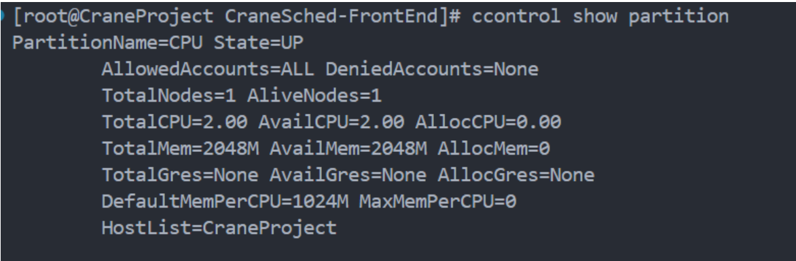
- 查看节点状态
无可选参数
eg:
ccontrol show node
运行截图：
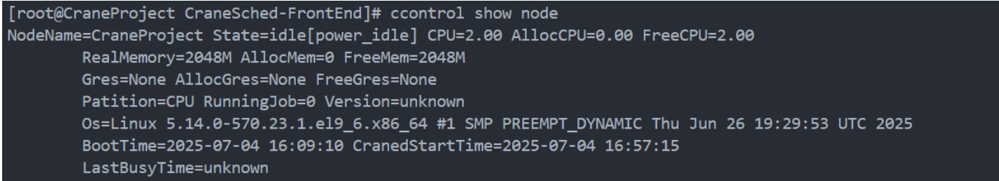
- 查看作业状态
无可选参数
eg:
ccontrol show job
运行截图：
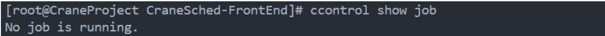
- 查看预定状态
无可选参数
eg：
ccontrol show reservation
运行截图：
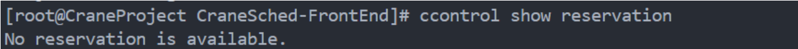
修改
- 修改作业信息
可选参数：
- priority：优先级
- timelimit：时间限制(采用时间格式)
eg：
ccontrol update jobid=11 priority=1 timelimit=01:00:00
运行截图：
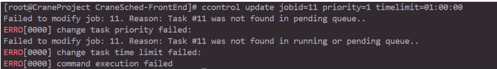
- 修改节点信息
必填参数：
- state：状态
- reason：原因
eg:
ccontrol update nodename=test_node state=drain reason="test"
运行截图：
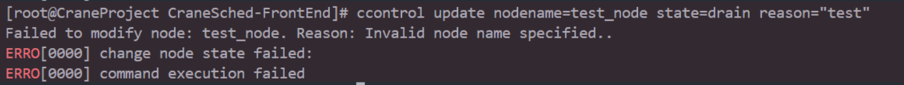
- 修改分区信息
可选参数：
- accounts：允许用户
- deniedaccounts：拒绝的用户
eg：
ccontrol update partition=test accounts=test_user
运行截图：
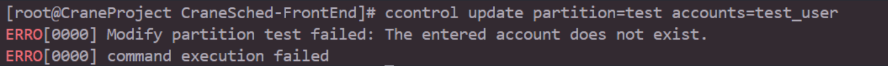
暂停/恢复
- 暂停作业
可选参数：
- timelimit:时间限制(采用时间格式)
eg:
ccontrol hold 1 timelimit=01:00:00
运行截图：
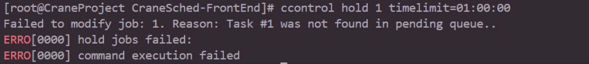
- 恢复作业
无可选参数
eg:
ccontrol release 1
运行截图：
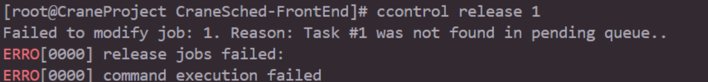
创建/删除
- 创建预订
必选参数：
- starttime：开始时间（采用日期|时间格式）
- duration：长度(采用时间格式)
- account：使用账户
可选参数：
- partition：使用分区
- nodes：使用节点
- user：使用用户
eg：
ccontrol create reservation test_reservation duration=01:00:00 partition=test_partition nodes=test_node account=test_account
注意：这里user支持=+和=-的用法，当=+表示允许用户，当=-的时候表示删除某用户
运行截图：
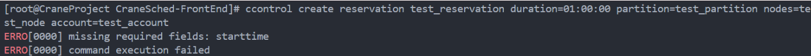
- 删除预订
无可选参数
eg:
ccontrol delete reservation test_reservation
运行截图：
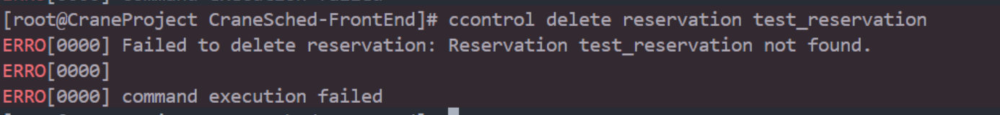
删除的命令
由于删除了cobra框架，现在completion自动补全代码命令已经无法使用
文件结构
help.go：由于删除了cobra框架，现在help命令的输出编写在help.go中
ccontrol.go：向后端通信的函数实现
CmdArgParser.go：命令解析文件，将使用解析到的命令行数据来调用ccontrol.go的函数
parser.go：解析器函数，定义数据结构与解析规则